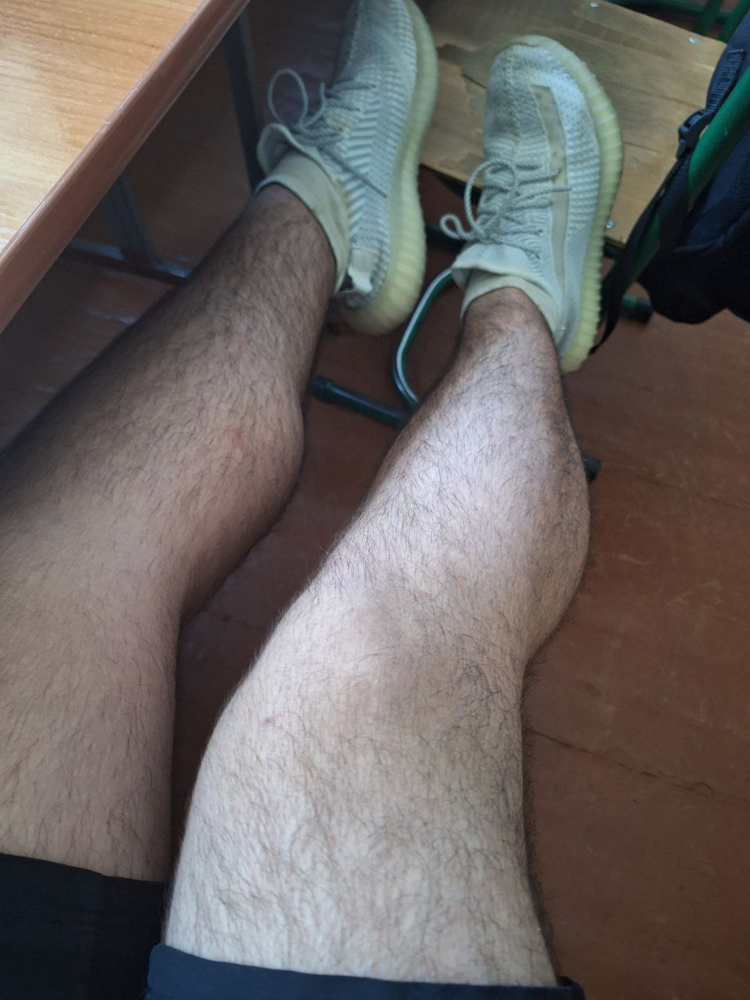
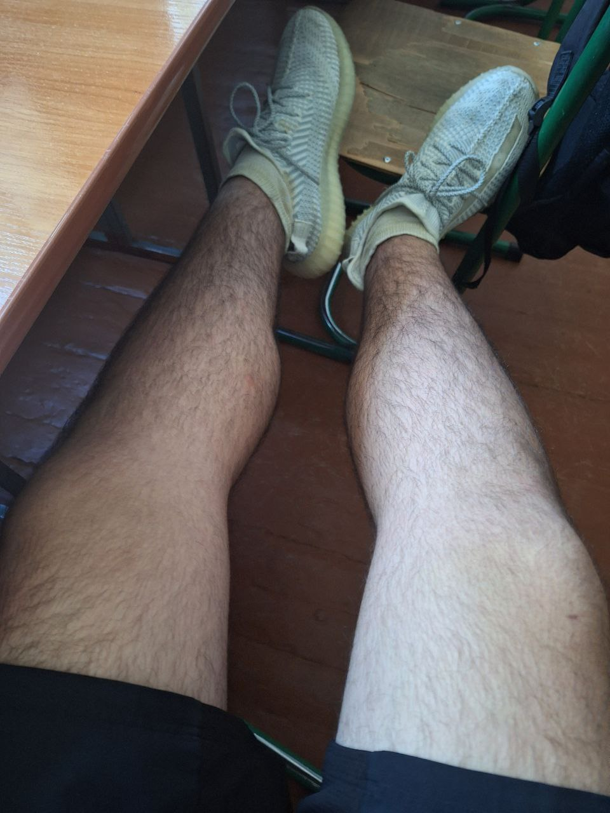
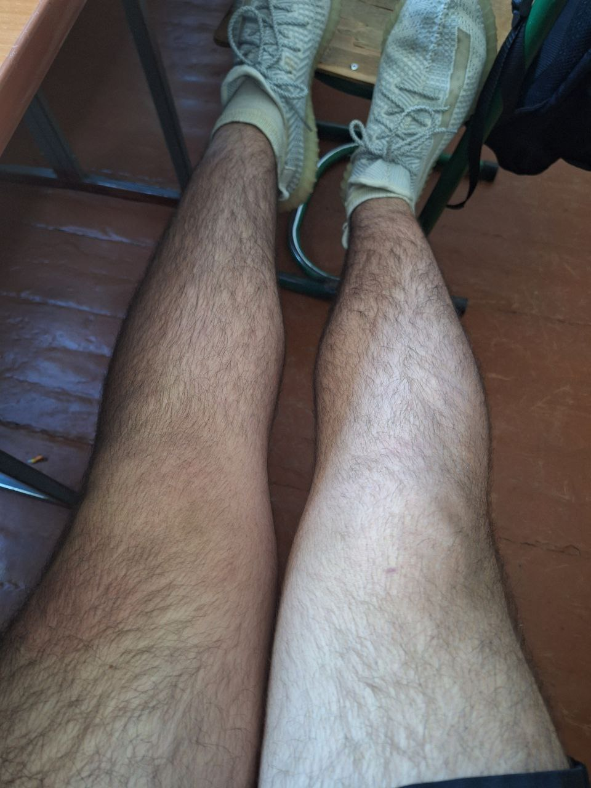
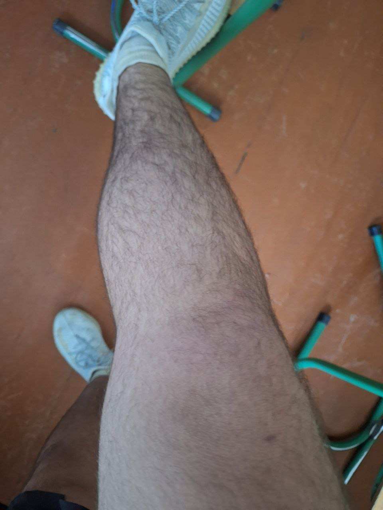

Я БОГ.
силОЧКА: Реклама за яку мені ніхто не заплатив
Май бест аніме дівчинка:

Це моя дівчина! Я не гей!
Ножки:




З вас 100 грн.
Я БОГ.
силОЧКА: Реклама за яку мені ніхто не заплатив
Це моя дівчина! Я не гей!
З вас 100 грн.